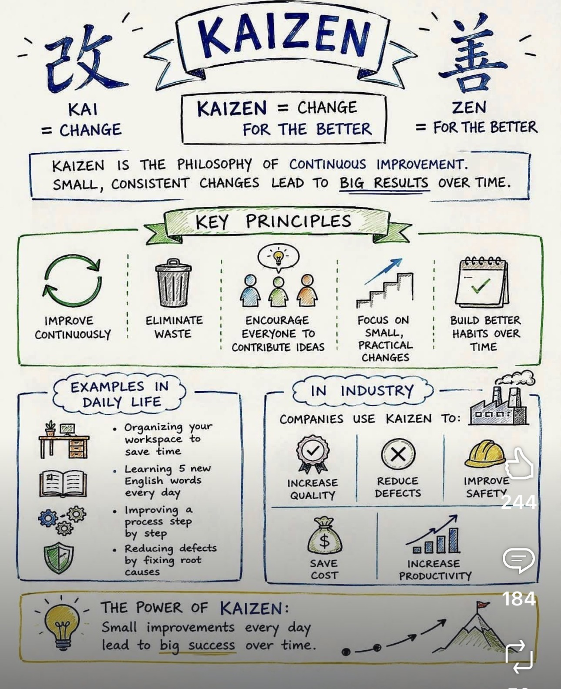

About Us
Operational Excellence Backed By Real-World Experience.
Lean & Six Sigma Improvement Associates helps organizations improve productivity, quality, capacity, compliance, and operational performance through structured improvement methodologies and practical business experience.
Built for Results
Lean • Six Sigma • Industrial Engineering • DMAIC • DMADV • Kaizen • Root Cause Analysis • Capacity Optimization
Founder, Leadership & Nationwide Network
Drew Harris
Lean & Six Sigma Improvement Associates was founded by Drew Harris, an Industrial Engineer and Lean Six Sigma Black Belt with decades of experience helping organizations reduce waste, improve productivity, increase capacity, strengthen quality, and improve operational performance.
Drew has supported operational improvement initiatives across aerospace, healthcare, biotechnology, financial services, insurance, manufacturing, utilities, information technology, security operations, and other performance-driven environments.
In addition to leading major improvement initiatives, Drew has trained and mentored Green Belts and worked alongside Black Belts and Master Black Belts throughout the United States.
While Drew serves as founder and principal leader, Lean & Six Sigma Improvement Associates is not a one-person consulting practice. The organization is supported by a nationwide network of experienced improvement professionals who can be deployed as client needs require.
Continuous Improvement Is Our Foundation
Kaizen teaches that small improvements applied consistently over time create significant gains in productivity, quality, customer satisfaction, safety, and operational performance.

At Lean & Six Sigma Improvement Associates, continuous improvement is more than a methodology. It is a mindset that guides every assessment, recommendation, project, and transformation effort.
Nationwide Professional Network
Every organization has different needs. Some engagements require a focused Lean assessment. Others require specialized expertise across quality systems, industrial engineering, process redesign, analytics, compliance, project management, or enterprise transformation.
Our professional network includes:
- Lean Practitioners
- Lean Facilitators
- Six Sigma Green Belts
- Six Sigma Black Belts
- Master Black Belts
- Industrial Engineers
- Quality Professionals
- Operational Excellence Leaders
- Project Managers
- Data & Analytics Specialists
This flexible model allows us to deploy the right expertise, at the right time, for the right engagement.
Industries Served
Core Methodologies
Lean Enterprise
Eliminate waste, improve flow, and increase value delivered to the customer.
Six Sigma
Reduce variation, defects, rework, and process instability.
DMAIC
Improve existing processes through Define, Measure, Analyze, Improve, and Control.
DMADV / DFSS
Design stronger future-state processes when existing workflows cannot meet requirements.
Industrial Engineering
Optimize capacity, workflow, throughput, labor utilization, and operational design.
Root Cause Analysis
Solve problems permanently by identifying and addressing the true causes of performance issues.
Our Mission
To help organizations uncover hidden opportunities, reduce waste, improve quality, increase capacity, and create sustainable operational systems that consistently deliver measurable results.
What We Deliver
Cost Reduction • Quality Improvement • Capacity Increase • Productivity Improvement • Process Excellence • Operational Transformation
Ready To Improve Performance?
Whether you need a rapid assessment, a deep operational review, or long-term transformation support, Lean & Six Sigma Improvement Associates is ready to help.
Request My Assessment